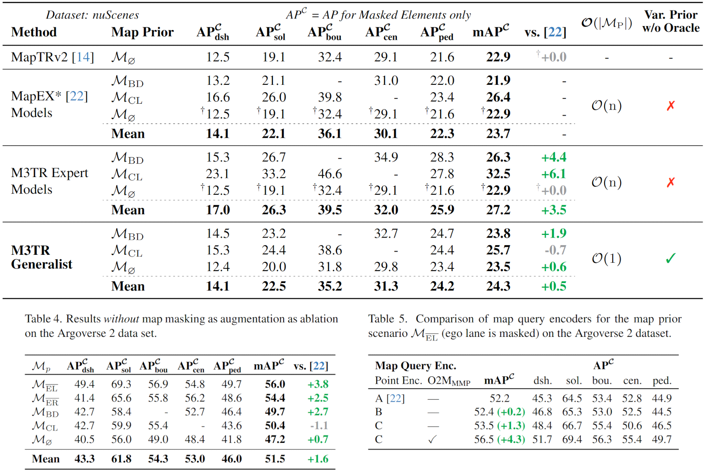

Overview
Overview of the model architecture of M3TR and the investigated point query encoder designs.
Further Innovations in Model Architecture and Setting

Evaluation Results on Argoverse 2

Autonomous vehicles require road information for their operation, usually in form of HD maps. Since offline maps eventually become outdated or may only be partially available, online HD map construction methods have been pro- posed to infer map information from live sensor data. A key issue remains how to exploit such partial or outdated map information as a prior. We introduce M3TR (Multi- Masking Map Transformer), a generalist approach for HD map construction both with and without map priors. We address shortcomings in ground truth generation for Argoverse 2 and nuScenes and propose the first realistic scenarios with semantically diverse map priors. Examining various query designs, we use an improved method for integrating prior map elements into a HD map construction model, increasing performance by +4.3 mAP. Finally, we show that training across all prior scenarios yields a single Generalist model, whose performance is on par with previous Expert models that can handle only one specific type of map prior. M3TR thus is the first model capable of leveraging variable map priors, making it suitable for real-world deployment.


@misc{immel2024m3trgeneralisthdmap,
title={M3TR: Generalist HD Map Construction with Variable Map Priors},
author={Fabian Immel and Richard Fehler and Frank Bieder and Jan-Hendrik Pauls and Christoph Stiller},
year={2024},
eprint={2411.10316},
archivePrefix={arXiv},
primaryClass={cs.CV},
url={https://arxiv.org/abs/2411.10316},
}